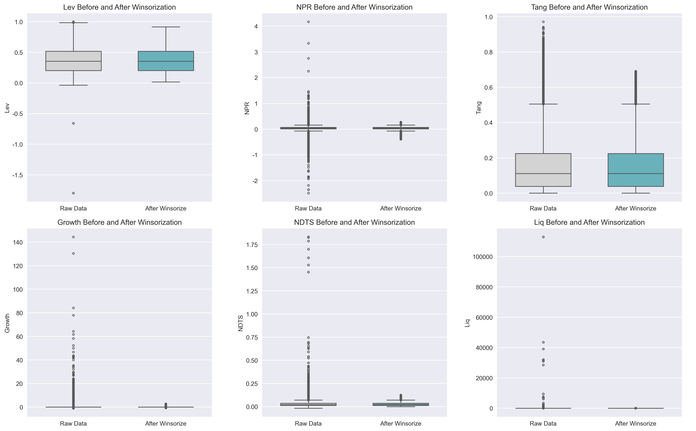
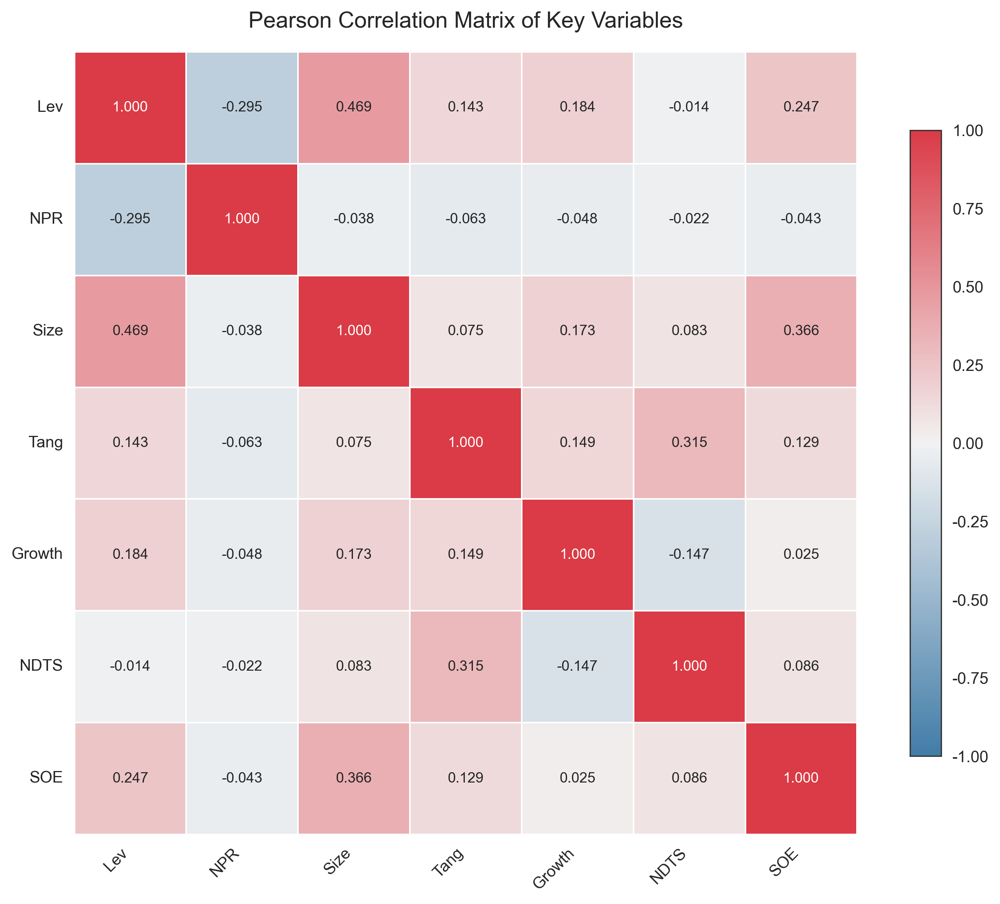
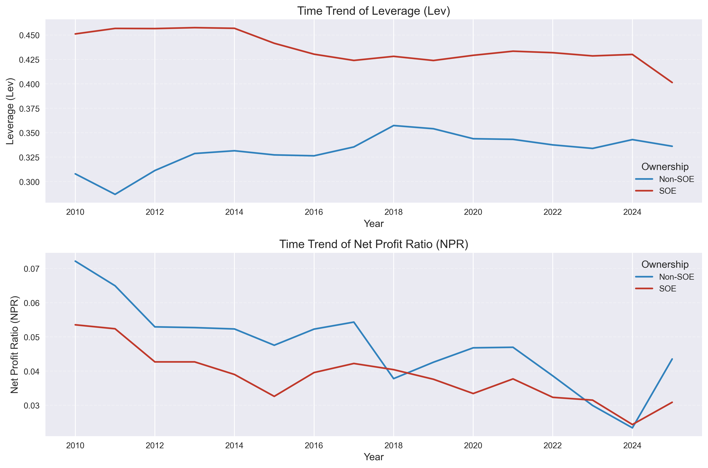

3 数据来源与样本范围
4 数据与变量
- 数据来源：CSMAR
- 数据频率：年度
- 样本区间：2010-2025 年
- 合并后初始观测值：266,446
4.1 变量定义
被解释变量：
\[ Lev_{it} = \frac{\text{Total Liabilities}_{it}}{\text{Total Assets}_{it}} \]
核心解释变量：
\[ NPR_{it} = \frac{\text{Net Income}_{it}}{\text{Total Assets}_{it}} \]
基准模型控制变量：
Size：ln(TotalAssets)Tang：NetFixedAssets / TotalAssetsGrowth：总资产增长率（公司内滞后）NDTS：折旧摊销占总资产比重SOE：产权性质虚拟变量
4.2 样本筛选流程
筛选顺序严格按照作业要求执行。
| 筛选步骤 | 剔除观测数 | 剩余观测数 | 剩余公司数 |
|---|---|---|---|
| 初始样本 | - | 266446 | 5684 |
| 剔除金融保险 | 10021 | 256425 | 5627 |
| 剔除 ST/PT 公司 | 48713 | 207712 | 4911 |
| 剔除 Lev > 1 | 96 | 207616 | 4911 |
| 剔除关键变量缺失 | 24630 | 182986 | 4705 |
| 最终样本 | 0 | 182986 | 4705 |
数据来源：output/sample_screening_table.csv。
4.3 异常值处理
根据要求，对 Lev、NPR、Tang、Growth、NDTS 进行按年份分组的双侧 1% Winsorize。

4.4 描述性统计
4.4.1 全样本
| 变量 | N | Mean | SD | P10 | P25 | Median | P75 | P90 |
|---|---|---|---|---|---|---|---|---|
| Lev | 182986 | 0.3685 | 0.2023 | 0.1070 | 0.2034 | 0.3552 | 0.5157 | 0.6502 |
| NPR | 182986 | 0.0427 | 0.0604 | -0.0050 | 0.0130 | 0.0380 | 0.0708 | 0.1098 |
| Size | 182986 | 22.1040 | 1.3112 | 20.6638 | 21.1894 | 21.8801 | 22.7925 | 23.8375 |
| Tang | 182986 | 0.1519 | 0.1436 | 0.0071 | 0.0379 | 0.1111 | 0.2246 | 0.3596 |
| Growth | 182986 | 0.0629 | 0.3695 | -0.1869 | 0.0000 | 0.0000 | 0.0000 | 0.3431 |
| NDTS | 182986 | 0.0257 | 0.0198 | 0.0053 | 0.0114 | 0.0213 | 0.0348 | 0.0509 |
4.4.2 SOE 与非 SOE 均值差异（Welch t 检验）
| 变量 | SOE均值 | 非SOE均值 | 均值差(SOE-非SOE) | t值 | p值 |
|---|---|---|---|---|---|
| Lev | 0.4398 | 0.3334 | 0.1064 | 105.216 | <0.001 |
| NPR | 0.0390 | 0.0445 | -0.0055 | -19.549 | <0.001 |
| Size | 22.7891 | 21.7672 | 1.0220 | 151.423 | <0.001 |
| Tang | 0.1782 | 0.1390 | 0.0393 | 49.410 | <0.001 |
| Growth | 0.0759 | 0.0565 | 0.0194 | 9.673 | <0.001 |
| NDTS | 0.0281 | 0.0245 | 0.0036 | 34.359 | <0.001 |
结论：SOE 平均杠杆率更高、规模更大；非 SOE 平均盈利能力更高。
4.5 相关系数矩阵

关键事实：
corr(Lev, NPR) = -0.295***，方向与优序融资理论一致。corr(Lev, Size) = 0.469***，显示大企业杠杆率更高。- 两两相关系数未出现 >0.7 的高相关组合，未见严重多重共线性迹象。
4.6 时序趋势

时序图显示：不同产权组在杠杆与盈利方面长期存在结构差异，为后续异质性回归提供了现实动机。